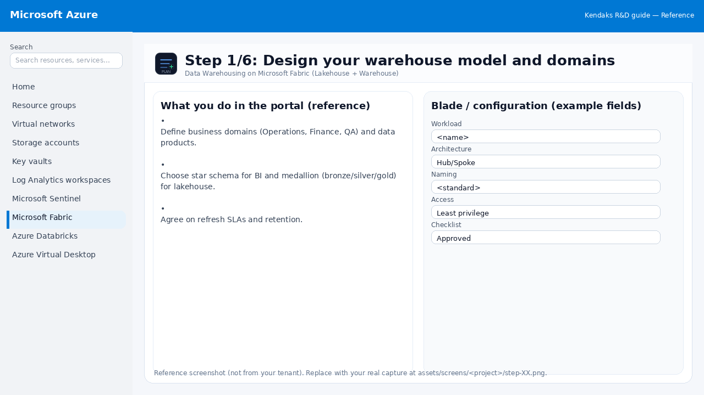
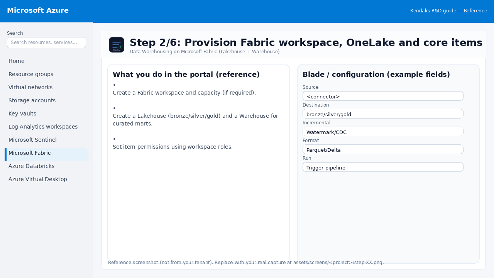
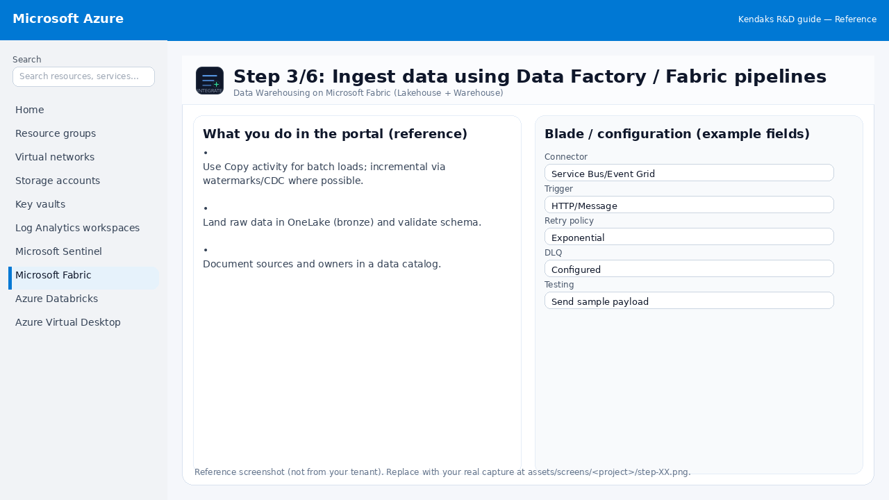
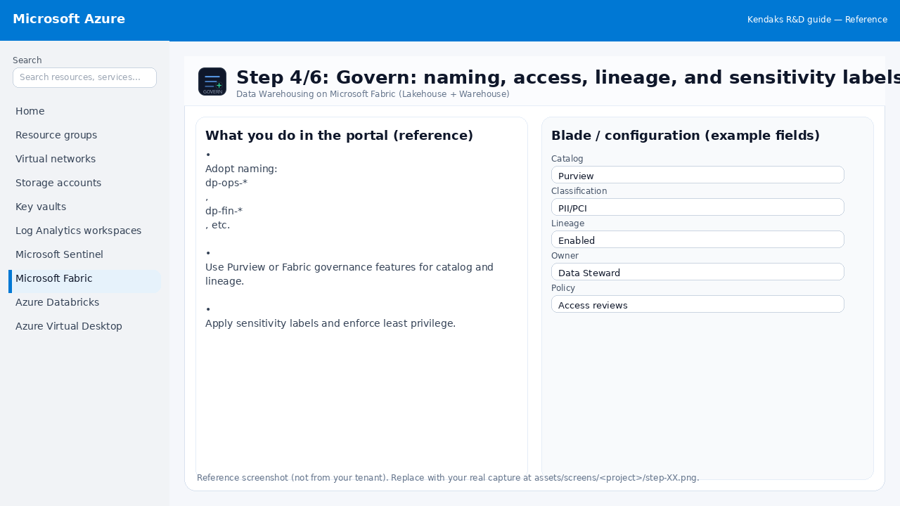
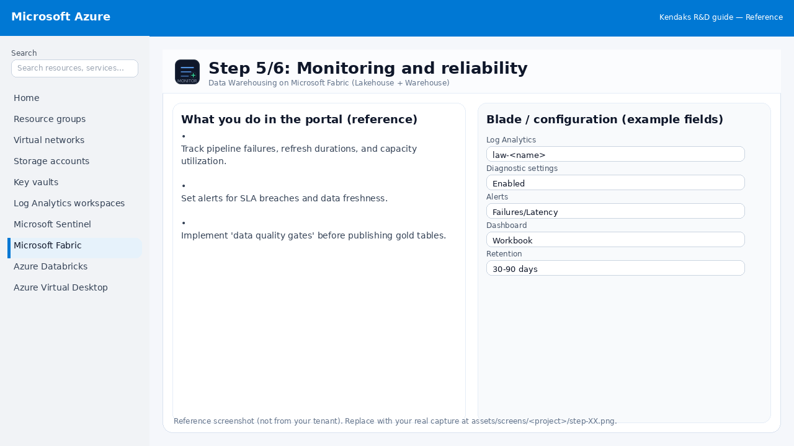
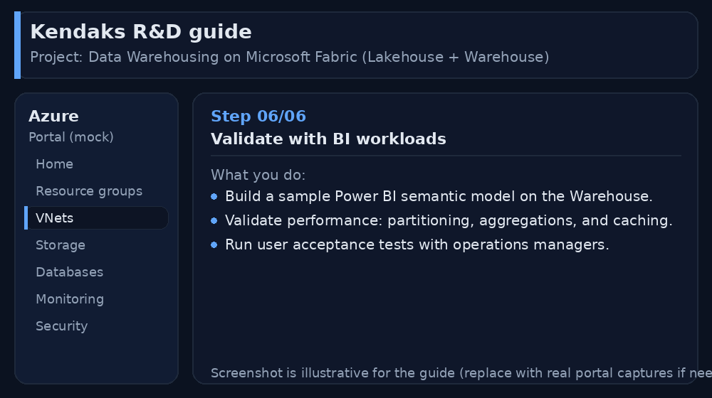

Data Warehousing on Microsoft Fabric (Lakehouse + Warehouse)
Category: Data & Analytics
Scenario: A BPO needs a modern analytics platform to consolidate CRM, ticketing, and finance data for daily SLA reporting. Example: 'Kendaks Support' ingests 20+ sources, supports self‑serve Power BI, and enforces governance.
Architecture diagram
High-level view of the main components and data/control flows.
Low-level architecture diagram (Visio-style)
Implementation view (networking, security, ops). Click to open full size.
Low-level architecture details
Capacity & workspaces
Capacities : cap-fabric-npr (DEV/TST), cap-fabric-prd (PRD).Workspaces : ws-dwh-dev, ws-dwh-tst, ws-dwh-prd.Entra groups (assign roles via groups only): FAB-DataEngineers, FAB-DataAnalysts, FAB-DataStewards, FAB-ReleaseApprovers. Use PIM for admin roles.
Data zones in OneLake (medallion)
Bronze : raw append-only files under /Files/bronze/<source>/<entity>/ingest_date=YYYY-MM-DD/.Silver : conformed Delta tables /Tables/silver_* (DQ checks + dedupe + standard types).Gold : business-ready tables /Tables/gold_* feeding the curated Warehouse.
Core Fabric items (per workspace)
Lakehouses: lh_bronze, lh_silver, lh_gold.
Warehouse: wh_curated (facts/dims; RLS where required).
Pipelines/Dataflows Gen2: ingestion + transforms; notebooks optional for Spark transforms.
Connectivity to sources
SaaS sources : Dataflows Gen2 / Pipeline connectors (incremental where supported).Azure sources : Pipelines Copy activity (watermark/CDC patterns).On-prem : hardened Data Gateway nodes (recommend 2 for HA) + secrets in Key Vault + patching via Update Manager.
Observability & reliability
Track pipeline failures, durations, rows processed, refresh success, and capacity utilization.
Persist DQ results (e.g., null %, duplicates) in a Gold ops table like gold_ops_dq_results, alert on thresholds.
CI/CD & promotion
Git-enabled workspace; promote DEV → TST → PRD with approval gates.
Parameterize connections/workspace IDs; block breaking schema changes with contract + DQ tests.
DR notes
Fabric is managed; DR focuses on reproducibility (Git + pipelines), gateway HA, and recoverable sources.
Mermaid (copy/paste)
flowchart LR
subgraph Sources
SaaS[SaaS Apps]
SQL[(Azure SQL / MI)]
OP[(On-Prem DBs)]
end
subgraph Support
GW[Data Gateway (HA)]
KV[Key Vault]
end
subgraph Fabric
P[Pipelines / Dataflows]
B[OneLake Bronze]
S[OneLake Silver]
G[OneLake Gold]
WH[Warehouse Curated]
BI[Power BI Semantic Model]
NB[Notebooks (optional)]
end
OP --> GW --> P
KV --> GW
SaaS --> P
SQL --> P
P --> B --> NB --> S --> NB --> G --> WH --> BI
Step-by-step implementation
Step 1/6
Design your warehouse model and domains

Reference portal screenshot (click to zoom). Replace with your tenant capture if needed.
Define business domains (Operations, Finance, QA) and data products. Choose star schema for BI and medallion (bronze/silver/gold) for lakehouse. Agree on refresh SLAs and retention.
Validation checklist
Stakeholders have signed off the scope, SLAs, and data/security requirements. You have documented naming standards, environments, and ownership (RACI).
Step 2/6
Provision Fabric workspace, OneLake and core items

Reference portal screenshot (click to zoom). Replace with your tenant capture if needed.
Create a Fabric workspace and capacity (if required). Create a Lakehouse (bronze/silver/gold) and a Warehouse for curated marts. Set item permissions using workspace roles.
Validation checklist
The storage/lakehouse/warehouse resources are created and accessible via least privilege. A sample dataset lands successfully and can be queried/read end-to-end. Retention, encryption, and backup settings match requirements.
Step 3/6
Ingest data using Data Factory / Fabric pipelines

Reference portal screenshot (click to zoom). Replace with your tenant capture if needed.
Use Copy activity for batch loads; incremental via watermarks/CDC where possible. Land raw data in OneLake (bronze) and validate schema. Document sources and owners in a data catalog.
Example code / notes
# Example: incremental load watermark concept
# source_table WHERE modified_at > @last_watermark
# store @new_watermark after load
Validation checklist
Connections/authentication succeed and test messages/records flow through. Retries/DLQ/error handling are configured and validated with a forced failure.
Step 4/6
Govern: naming, access, lineage, and sensitivity labels

Reference portal screenshot (click to zoom). Replace with your tenant capture if needed.
Adopt naming: dp-ops-*, dp-fin-*, etc. Use Purview or Fabric governance features for catalog and lineage. Apply sensitivity labels and enforce least privilege.
Validation checklist
RBAC/roles are assigned to Entra groups (no direct user assignments). Policies/labels/lineage settings are enabled as required. Audit logs are enabled and flowing to the central workspace/SIEM.
Step 5/6
Monitoring and reliability

Reference portal screenshot (click to zoom). Replace with your tenant capture if needed.
Track pipeline failures, refresh durations, and capacity utilization. Set alerts for SLA breaches and data freshness. Implement 'data quality gates' before publishing gold tables.
Validation checklist
Logs and metrics are flowing (check Log Analytics / Monitor). Alerts trigger correctly (test alert path to email/Teams/ITSM).
Step 6/6
Validate with BI workloads

Reference portal screenshot (click to zoom). Replace with your tenant capture if needed.
Build a sample Power BI semantic model on the Warehouse. Validate performance: partitioning, aggregations, and caching. Run user acceptance tests with operations managers.
Validation checklist
UAT completed with representative users and scenarios. Performance meets baseline; issues tracked and remediated.